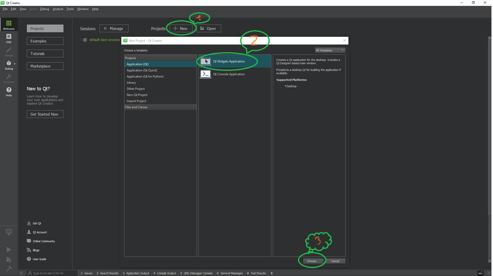
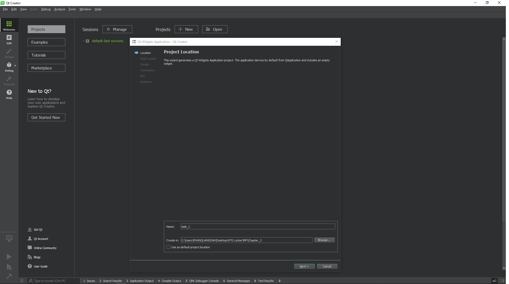
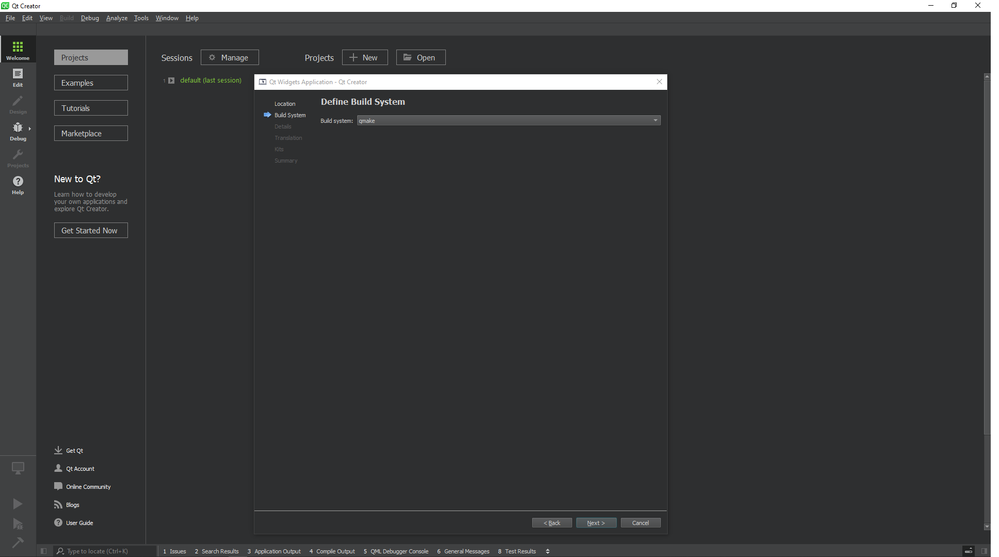
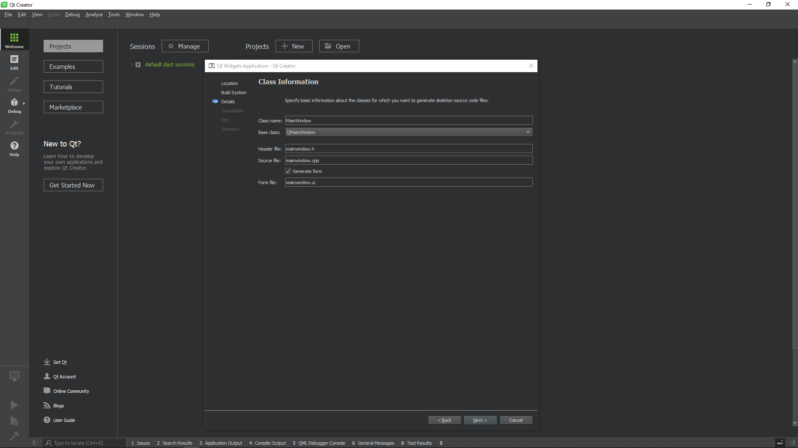
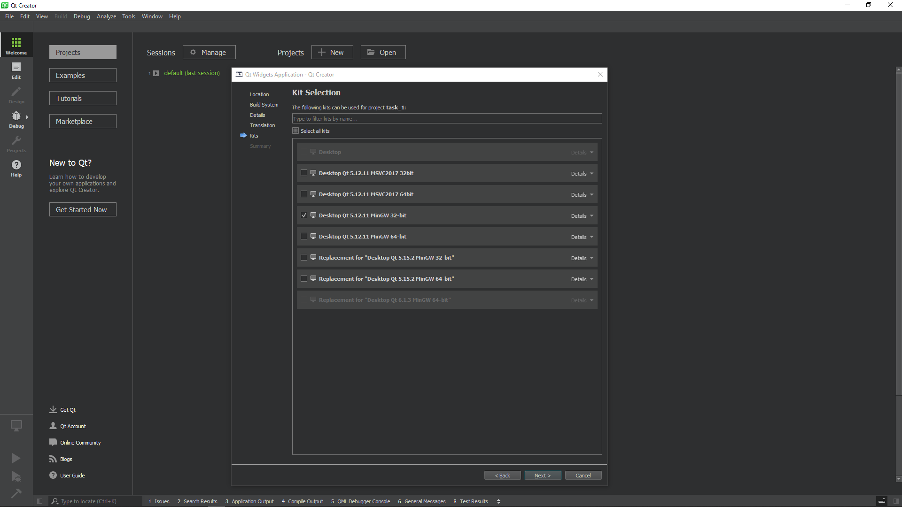
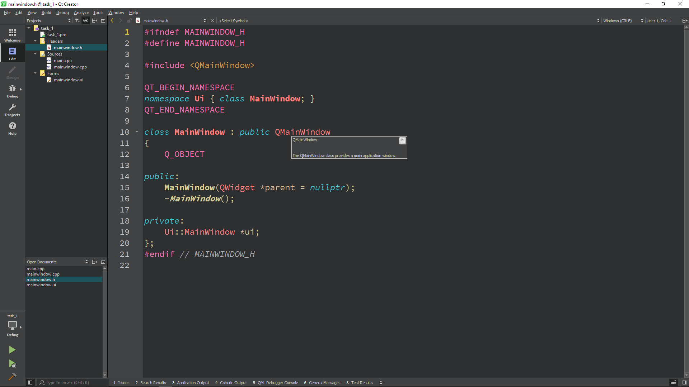
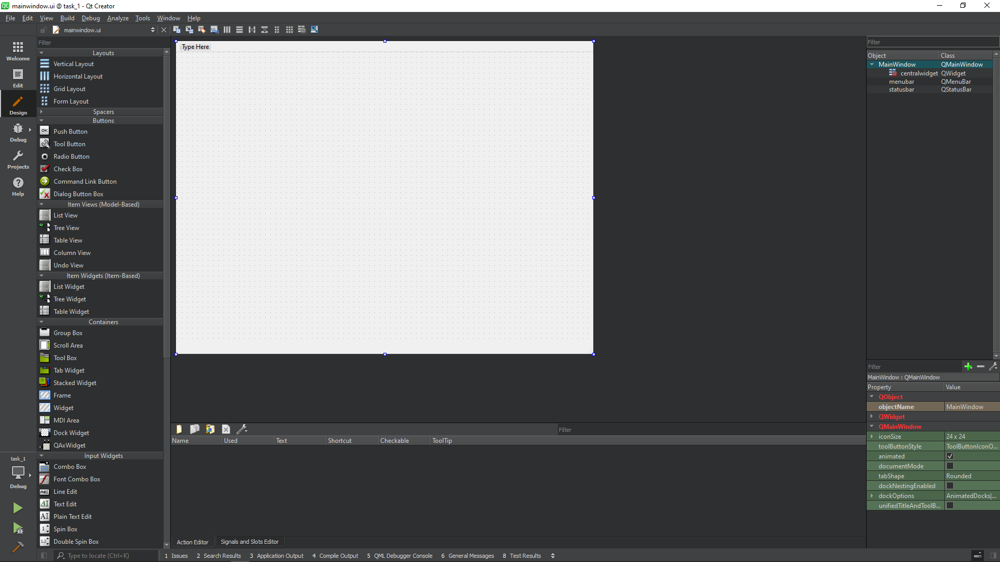

Qt được phát triển bởi Trolltech, một công ty phần mềm của Nauy. Năm 2008 công ty này được mua bởi Nokia. Từ đó Qt được phát triển thêm một mã nguồn mở. Trang web mã nguồn mở của Qt là https://qt.io.
Qt là một framework đa nền tảng. Một số ứng dụng phổ biến viết từ Qt cỏ thể kể đến như KDE,Opera,Google Earth,Skype. Qt lần đầu tiên được giới thiệu vào năm 1995. Qt có thể dùng để phát triển ứng dụng mã nguồn mở lẫn các ứng dụng dánh cho doanh nghiệp. Bộ công cụ phát triển Qt rất mạnh mẽ vì nó được cả một cộng đồng mã nguồn mở hỗ trợ.
Các bạn vào http://www.qt.io/download-open-source/ để tải về bộ IDE của Qt là Qt Creator. Phiên bản Qt mà mình sử dụng là phiên bản 5.0.1. Các bạn có thể xem video sau để hiểu hơn chi tiết cách cài đặt.
Bước 1: Chọn New -> Application(Qt) -> Qt Widgets Application (Như hình dưới)
Bước 2: Đặt tên cho dự án -> chọn đường dẫn lưu tệp dự án -> tích vào chọn đường lưu nếu cần thiết (Như hình dưới)
Bước 3: Chọn qmake (Như hình dưới)
Bước 4: Bạn có thể để mặc định như hình bên dưới
Bước 5: Mình chọn MinGW 32-bit để chương trình chạy ổn định
Bước 6: Chọn finish.Đây là giao diên dự án sau khi bạn tạo.Để chạy bạn ứng dụng nhấn phím F5.
Đây là giao diện để thiết kế giao diện úng dụng của các bạn
 Back Page